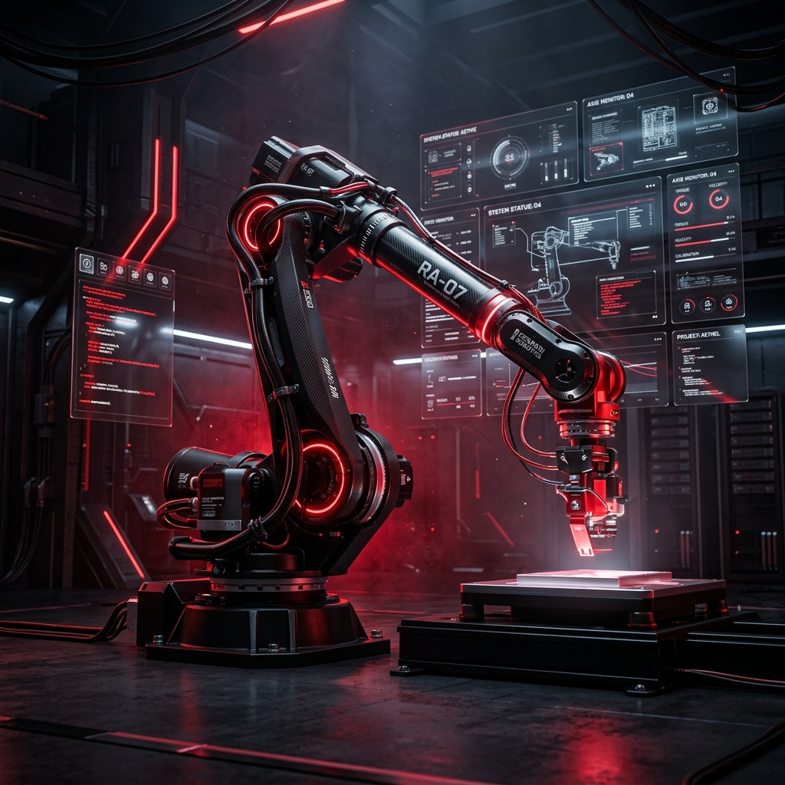

A scalable, modular platform to design, train, and validate AI algorithms on virtual robotic systems before a single real-world robot is ever deployed.

Independent but interoperable modules built for a high-fidelity simulation ecosystem.
Handles physics, collision detection, and real-time 3D rendering. Compatible with Gazebo, Unity3D, and Unreal Engine.
Imports and manages URDF/SDF robot models including kinematics, joints, sensors, and actuators.
Emulates RGB/depth cameras, LIDAR, IMU, GPS, and tactile sensors with configurable noise profiles.
Python APIs and OpenAI Gym-compliant RL environment. Connects to TensorFlow, PyTorch, and JAX.
Coordinates swarm and collaborative scenarios through messaging protocols and priority scheduling.
High-frequency logging of telemetry. Exports to CSV, JSON, and ROS bag formats with live dashboards.
Drastically reduced real-world testing spend.
Faster AI iteration and deployment cycles.
Cloud-native parallel simulation execution.
Shared platform across research communities.
Delivered across eight sequential phases spanning 14.5 months.
Architecture, tech stack selection.
Physics engine setup and robot model integration.
AI Interface APIs, swarm coordination, and cloud execution.
Dashboards, performance benchmarking, and final packaging.